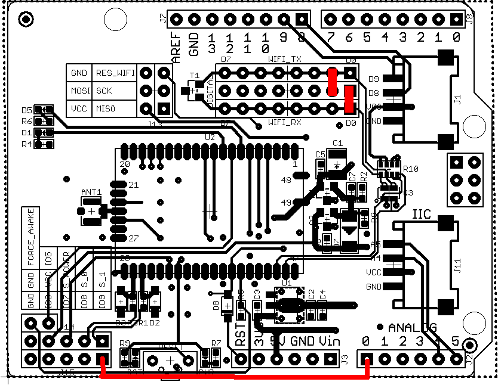
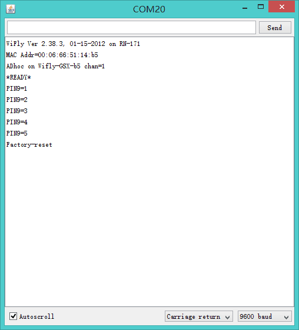

Set GPIO9 high on power up to arm the factory reset function. Then toggle GPIO9 five (5) times, which restores the configuration to the factory reset. GPIO9 is sampled at about 1 Hz; therefore, if you are using a CPU to generate the signal, make sure that GPIO9 transitions (high to low or low to high) are at least 1 second long.
To generate factory reset signal, using the following sketch.
/*
Hardware Connection
---------------------------
Arduino WiFi Shield
A0 <----> IO9
D0 <----> RX
D1 <----> TX
*/
#define GPIO9 A0
void setup()
{
pinMode(GPIO9, OUTPUT);
digitalWrite(GPIO9, HIGH);
pinMode(0, INPUT);
pinMode(1, INPUT);
pinMode(13, OUTPUT);
digitalWrite(13, HIGH);
delay(3000);
}
void loop() {
digitalWrite(GPIO9, HIGH);
digitalWrite(13, HIGH);
delay(1200);
digitalWrite(GPIO9, LOW);
digitalWrite(13, LOW);
delay(1200);
}
Connect A0 to IO9, D0 to WIFI_RX, D1 to WIFI_TX, plug WiFi Shield on a Seeeduino or Arduino

Press the reset button of WiFi Shield, open the Serial Monitor, you will get the message in the following picture. If you got nothing in half minute, try again.

Copyright (c) 2008-2016 Seeed Development Limited (www.seeedstudio.com / www.seeed.cc)